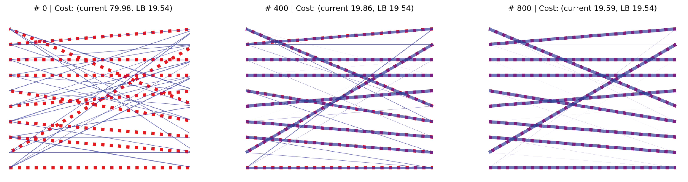
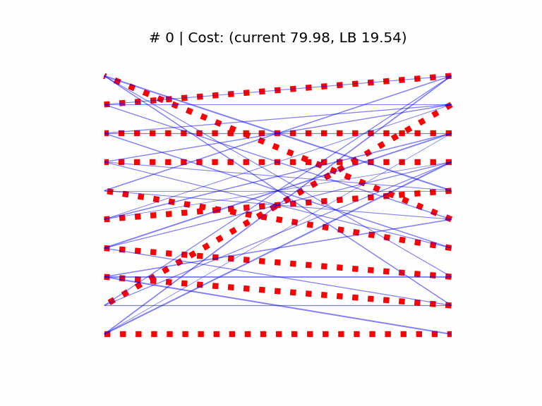
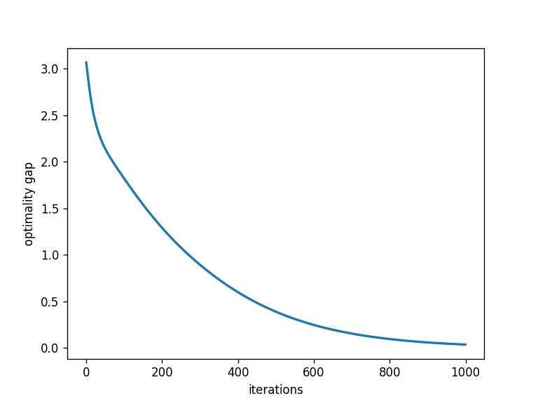

Introduction

Some time ago I ran into two separate instances of the same combinatorial optimization problem in the span of a few days, and decided to read up a little on the fundamentals. The two applications were object tracking in videos, and peaks alignment in chromatography data.
By chasing down some definitions, I learned about the Birkhoff theorem, which led me to wonder whether we can turn the original combinatorial problem (minimum weight bipartite matching aka “assignment” [0]) into a differentiable one. The other half of my investigation was about how to turn a constrained continuous optimization problem into an unconstrained one over an appropriate manifold.
In this post I document my experiments which started from a “what if?” and ended up connecting some interesting areas of mathematics and computer science (and an empirical confirmation to my starting intuition, I should add).
Minimum bipartite matching
Given a bipartite graph between two sets U, V of n items each, and an edge cost matrix C with positive entries, the assignment problem can be written as finding a permutation matrix P that minimizes the total cost:
$$ P^{\star} = \underset{P \in \mathbb{P}}{\mathrm{argmin}} \left( P C \right) $$
Recall that a permutation matrix has binary entries, and exactly one 1 per row.
Finding the optimal permutation matrix P⋆ is a combinatorial optimization problem that has well known polynomial-time solution algorithms, e.g. Munkres that runs in O(n3) time.
The assignment problem is a special case of the larger family of optimal transport problems, which mathematicians started looking at in the 18th century.
From discrete to continuous
The Birkhoff-von Neumann theorem states that, in dimension n, the set 𝔹 of doubly stochastic matrices [1] is the convex hull of the set of n × n permutation matrices. Informally, there is a convex, continuous region of space “between” the permutation matrices of a given dimensionality. This convex set is called the Birkhoff polytope [2].
Can we perhaps use this result to solve the assignment problem with a convex, interior point approach?
We can rewrite the assignment problem such that the optimization variable ranges over the Birkhoff polytope; this rewritten form is equivalent to the original one since the cost function is linear in the argument P, so we expect the optimum to lie at a vertex of the admissible region 𝔹 (i.e. to be a permutation matrix).
$$ P^{\star} = \underset{P \in \mathbb{B}}{\mathrm{argmin}} \left( P C \right) $$
That implicit constraint under the argmin looks nasty. How to address it?
In the following we’ll see how to turn this kind of constrained optimization problem into an unconstrained one over an appropriate manifold.
Optimization on manifolds
Informally, a manifold is a version of Euclidean space ℝn that is only locally flat (unlike regular Euclidean space which is uniformly flat everywhere).
In order to “make progress” towards a minimum cost region over a manifold, we must define notions of vector addition over curved spaces, in a way.
The main technical devices for moving between ℝn and a smooth manifold 𝕄 are the orthogonal projection from 𝕄 to its tangent, and the retraction operation that assigns points on the tangent bundle T𝕄 to 𝕄.
For an introduction to the relevant definitions I found the book and online course “An introduction to optimization on smooth manifolds” to be very accessible.
The manifold of doubly stochastic matrices
Many interesting sets have manifold structure: the sphere, the set of probability distributions, the set of positive-definite matrices. You can construct manifolds from products of manifolds, too. With some furious handwaving on my part and by recognizing the similarities (e.g. positivity and unit norm constraint, but I’ll try to dig out a reference) you can convince yourself that DS matrices have manifold structure in turn.
The numerical implementations of the projection and retraction operators are taken from the literature, i.e. a single paper on the topic [4].
As a side note, one of the internal operations to implement the retraction is the Sinkhorn-Knopp iteration which has applications elsewhere too (e.g in optimal transport).
First-order optimization on manifolds
My optimization code is based on torch with some code borrowed from mctorch [3], extended to implement the manifold of doubly-stochastic matrices. In the following I refer to Python modules and line numbers in my implementation at this commit :
Disregarding some implementation details (e.g. how Pytorch handles mutable objects), at every SGD step (rsgd.py line 57), the optimizer follows the textbook definition:
- computes the Riemann gradient (
egrad2rgrad, fromparameter.pyline 31) via an orthogonal projection of the Euclidean gradient of the cost function onto T𝕄 - scales it by the negative learning rate
- computes the retraction of the current point along the scaled Riemann gradient, thereby moving to a new point on 𝕄.
The doubly-stochastic matrix manifold operations are implemented here.
Experiments
We start by generating a cost matrix of rank n, and computing the optimal assignment with the Munkres algorithm, which provides us with a cost lower bound (yLB). We then initialize the SGD optimizer at a random doubly stochastic matrix, with the elements sampled from the “folded” normal distribution ∥𝒩(0, 1)∥. The learning rate is set to 2e-2 (found empirically).

In the above animation we see the optimal assignment as dashed red edges, superimposed with the temporary solution in blue. As a visual cue, the thickness of the blue edges is proportional to the respective matrix coefficient, and we see the matrix “sparsifies” as it approaches the optimum at a vertex of the Birkhoff set.

As we can see above, the optimality gap between the current and the Munkres cost (y − yLB) converges smoothly to 0 (from most starting points, in my experiments). I still have to characterize some rare cases in which the bound worsens for a while before improving again.
Conclusions
I was quite surprised this approach works so well, to be honest. Besides usual academic concerns of performance, convergence bounds etc., it would be interesting to generalize this approach and look at the actual connections with optimal transport: what if we have two histograms or distributions rather than the sets U and V?
Code repo
All scripts can be found on my GitHub profile here.
References
- Assignment problem wikipedia
- Doubly-stochastic matrix wikipedia
- Birkhoff polytope wikipedia
mctorchhttps://github.com/mctorch/mctorch- Douik, A. and Hassibi, B., Manifold Optimization Over the Set of Doubly Stochastic Matrices: A Second-Order Geometry, 2018 arXiv
- Boumal, N. An introduction to optimization on smooth manifolds